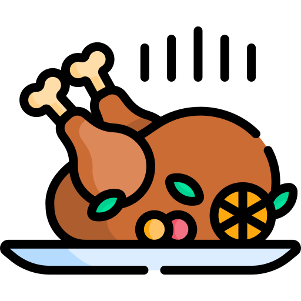

What is it?
Thanksgiving Day (translated to Portuguese: “Dia de ação de Graças”), the main holiday for North American families,
is celebrated with the intention of thanking God for the year’s good events and blessings. In the United States as
well as elsewhere, Thanksgiving Day is celebrated in the family, so it is common for people to travel to gather with
their family.
It originally came from the commemoration of the plenty of crops being harvested in the autumn of the northern hemisphere
at the end of November. Unlike other holidays around the world, this one does not have a fixed date since it is celebrated
on the last Thursday of November. In 1863, the president of the era, Abraham Lincoln, decreed officially that the fourth
Thursday of November would be Thanksgiving Day. Then the date became a national holiday in the United States in the year
of 1941.
One curiosity is that after the holiday commemorations, another event called Black Friday occurs, where the shops give
discounts to the consumers.
How did it work?
Starting the analysis from the historical register of this date, Thanksgiving Day happened for the first time in the United
States in the year of 1621, in Plymouth, Massachusetts, where the party was organized by pilgrims (the ones who did far travels)
and the villa’s funders for the end of the winter could be celebrated and to celebrate the good harvest of corn.
In Canada, the celebrate has started in the beginning of 1578 that beyond the occasion of thanking is a date to celebrate the
arrival of English Martin Frobisher, that where a Britannic sailor that claimed Canada to the England crown, in solid ground.
In both countries, the holiday has the same intuit of expressing thanking for the abundance of agricultural crops.
Even the Thanksgiving Day is a holiday with a diversity of plates and typic foods, in its origin the plates were roast and cooked,
madden based on corn. In 1966, the law 5110 was decreed, which stated that the celebration of the Thanksgiving should be on the fourth Thursday of November.
What do you eat on Thanksgiving day?
Beyond the cookies and the apple and nut pie, Thanksgiving Day is celebrated with a dinner based on traditional American dishes
such as pumpkin, sweet potatoes, mashed potatoes, cranberry sauce, known as blueberry in Brazil, and the traditional turkey.

The Turkey
About 50 million turkeys are consumed on Thanksgiving Day in the United States, which is one of the reasons that the date is known
as “Turkey Day”. In addition, every year, the President of the United States takes part in a ceremony that forgives two turkeys, saving
them from slaughter.
⇡
And in Brazil?
The principal purpose of the lack of a celebration of Thanksgiving Day in Brazil is justified by the historical context. As Brazil
was colonized by Portugal and not by England, many of the costumes and celebrations came from Portuguese culture, along with African
and native influences.
Even so, despite that it is not a usual celebration, the date was regularized in the national calendar in 1949 by President Eurico
Gaspar Dutra. In 1965, President Castello Branco declared that the celebration would be on the same day as the United States.
Comparations
Despite being a date with the opposite meaning to that of Thanksgiving Day, it is very similar to Christmas in Brazil on account of
supper being realized on the eve, on December 24th.
Christmas, celebrated on December 25th, celebrates Jesus Christ’s birth, the most important figure in Christianism. For that reason,
it is considered by Christians to be one of the most celebrated dates, along with Easter, that is, to celebrate the resurrection of
Jesus. As a result, it is observed as a religious holiday in many parts of the world.